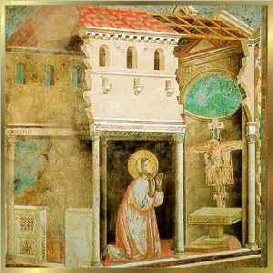
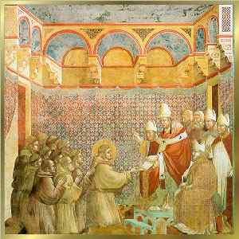
1 - Na Igreja de São Damião, Francisco reza diante do Crucifixo bizantino. 2 - Francisco e os Frades recebem do Papa Inocêncio III, o documento de autorização para funcionamento da Ordem.
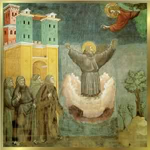
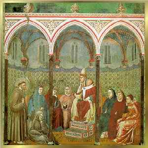
1 - Os Frades presenciaram Francisco em profunda contemplação, elevar-se do solo. 2 - Francisco pede ao Papa Honório III a Indulgência plenária para a Porciúncula (Igreja de Santa Maria dos Anjos)
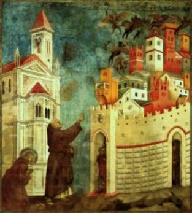
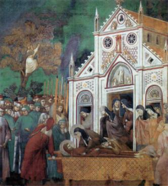
1 - Francisco sonhou que Sua Santidade Inocêncio III, enfrentou os demônios que rondavam a Residência do Papa. 2 - Francisco morto é transportado para a Igreja de São Damião, ao lado do Convento de Santa Clara.
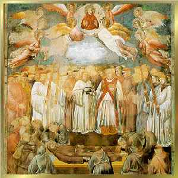
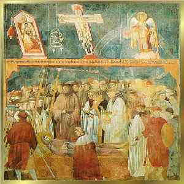
1 - Francisco morto na Catedral de Assis. 2 - Francisco morto na Porciúncula.
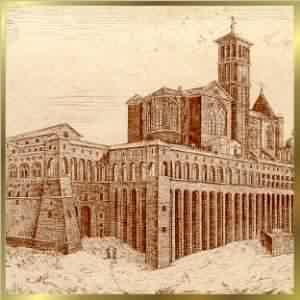
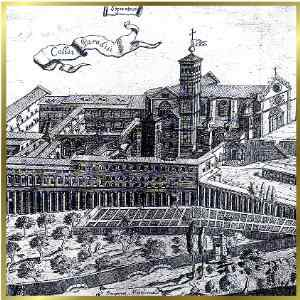
1 e 2 - Imagens da Basílica Santuário de São Francisco em Assis, na Itália.
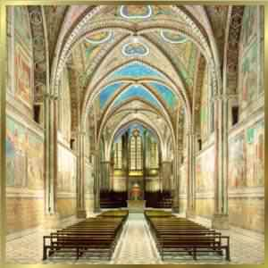
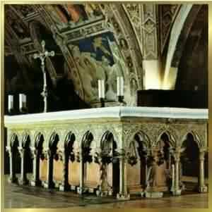
1 e 2 - Interior da Basílica de São Francisco.
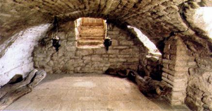
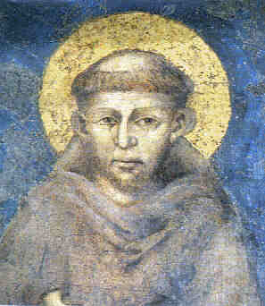
1 - Cela na Porciúncula, onde Francisco morreu . 2 - Pintura de São Francisco, por Cimabue.
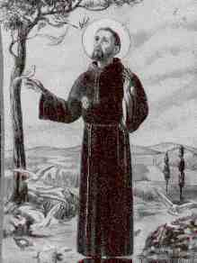
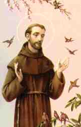
1, 2 e 3 - São Francisco de Assis.
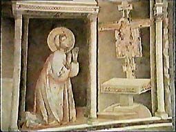
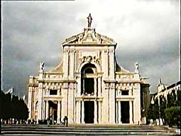
1 - Francisco reza diante do Crucifixo na Igreja de São Damião. 2 - Porciúncula (Igreja de Santa Maria dos Anjos).
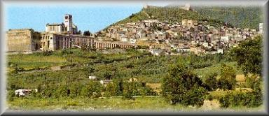
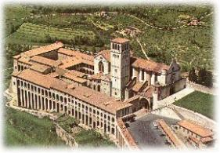
1 - Cidade de Assis. 2 - Basílica Santuário de S. Francisco.
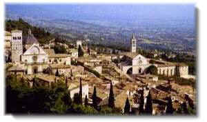
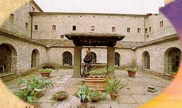
1 - Cidade de Assis. 2 - Pátio interno do Convento das Clarissa, em Assis.
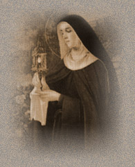
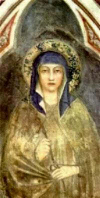
1, 2 e 3 - Santa Clara de Assis.
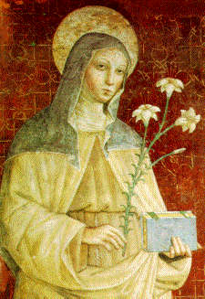
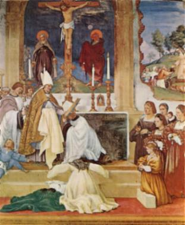
1 - Santa Clara. 2 - Clara faz voto de pobreza, humildade e castidade, diante do Bispo Guido.
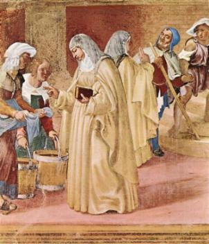
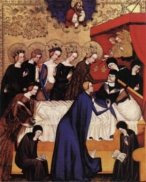
1 - Clara atendendo a pobres. 2 - Morte de Clara.